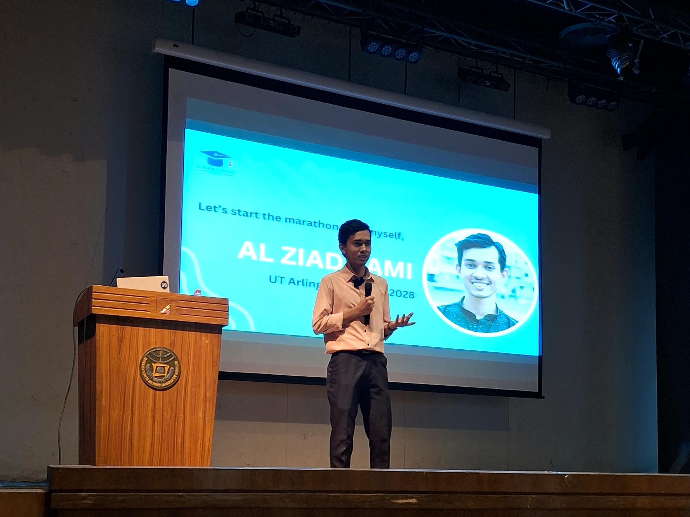
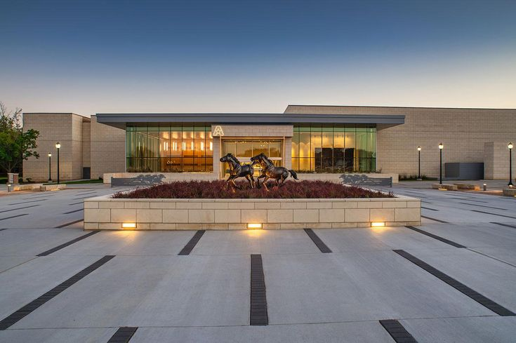

Intro
I'm Al Ziad Sami, a Computer Science major at The University of Texas at Arlington, driven by a passion for technology and innovation. My academic journey has equipped me with a solid foundation in software engineering, and I am enthusiastic about applying these skills to real-world challenges.
My goal is to become a proficient software engineer, specializing in creating efficient, scalable, and user-friendly applications. I am particularly interested in fields such as artificial intelligence, data analysis, and web development. Through my studies and projects, I have developed a keen understanding of programming languages, algorithms, and software design principles.
Work & Skills

Professional Experience
Founder, EasyPay | Dhaka, Bangladesh | January 2024 - Present
- Helped 1k+ students to do international payments such as SAT exam registration, University application fees, PTE exam registration, etc. using just local currency.
- Analyzed market space for international transactions and made it easy to do for local students.
- Developed Excel interactive sales tool to communicate economic value to customers given set of inputs.
Academic Counselor, Science Point Academic Care | Dhaka, Bangladesh | September 2019 - August 2023
- Supervised more than 500 high-achieving high-school students through completion of high school courses, especially with science courses.
- Advised students on appropriate study plans for their board exams and discussed personal problems in specific fields.
- Facilitated successful construction of a coaching center in my arena.
Program Head of Video Editing Department, Connect Japan | Remote | April 2021 - August 2021
- Produced videos about the undergrad admission process in Japan by researching individual universities' education systems and other admission requirements.
- Produced about 25% of videos for this organization about undergraduate admission, worked in a group, and improved managing capabilities by directing the video editing team.
Skills and Interests
Languages: English (Fluent), Bangla (Native), Hindi (Fluent), Spanish (Intermediate)
Computer Skills: Proficient in C, C++; Microsoft Office Suite; Familiar with Adobe Premiere Pro
Interests: Soccer, Cinematography, Public Speaking, Stand-up Comedy, Gaming
Leadership Experience
Executive Administrator, Government Science College Science Club | Dhaka, Bangladesh | July 2019 - December 2021
- Handled member recruiting among more than 1200 students from junior batches and trained them on projects and science club operations.
- Created statistical reports for more than 600 club members and supervised weekly activities of about 40 projects.
Student Council President, Bamoil Ideal High School | Dhaka, Bangladesh | January 2015 - February 2019
- Selected by direct election of 1000+ students to represent the student council of the school.
- Helped students understand campus rules and represented their problems to the school authority to take necessary steps.
- Worked as a bridge between teachers and students to schedule class tests, track assignments, and other group activities.
Honors and Awards
- Placed Second Runner-up in Long Jump at Government Science College Sports Week | December 2019
- Ranked first in the regional round of the Bangladesh Kishor-Kishori Summit Competition | August 2018
- Winner of “Bongobondhu Essay Competition at Bamoil Ideal High School & College | March 2017
Education

University: The University of Texas at Arlington
Location: Arlington, Texas, USA
College: College of Engineering
Degree: BS in Computer Science
Duration: August 2024 - Present
Honors: Maverick Academic Scholar, Honors Student
Contact